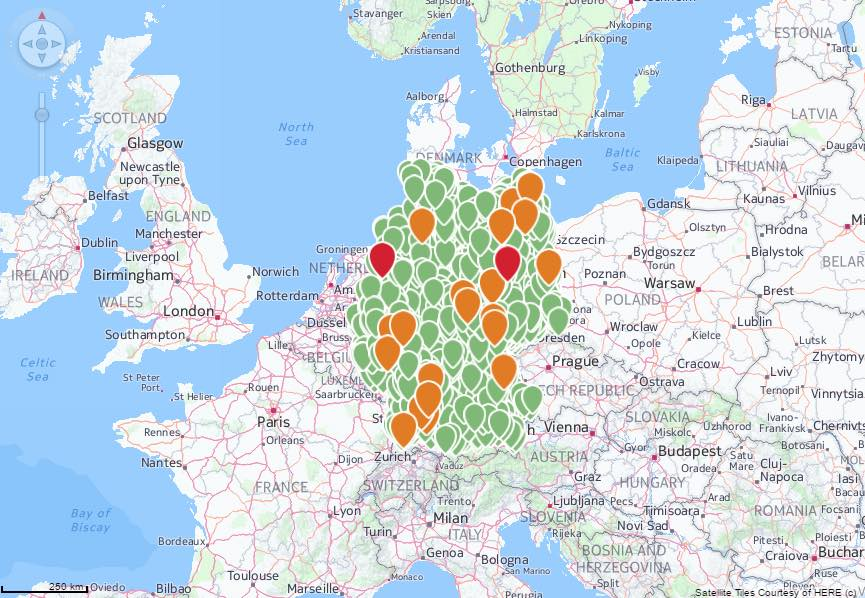
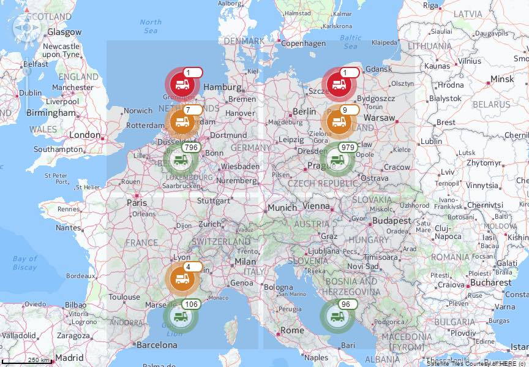
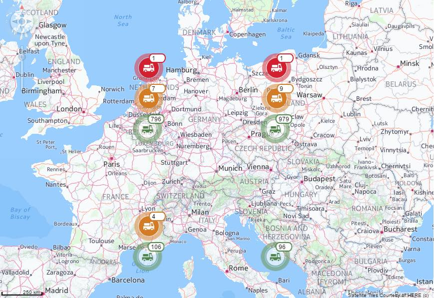
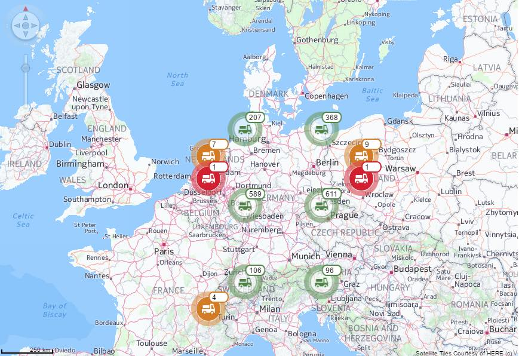
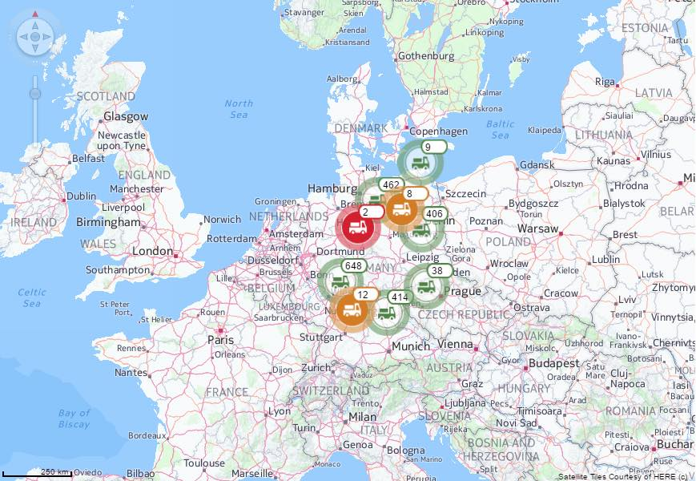
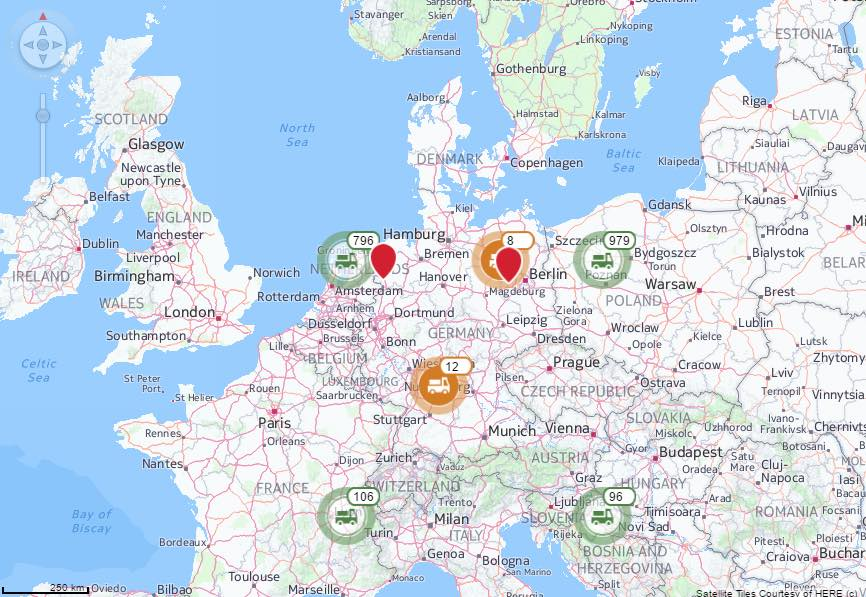
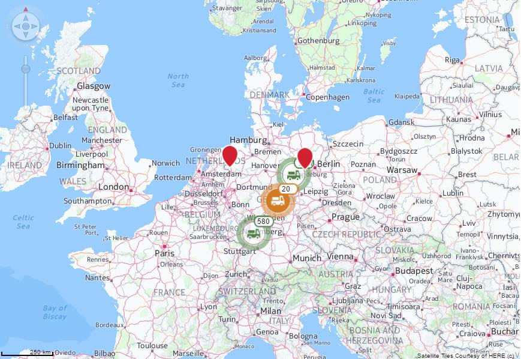

The aim:
To test different clustering modes.
To test:
- Check that the map loads without any clustering modes. 
- Click "Enable Grid Clustering (show grid)" and check that clusters are added.
* Visual objects are clustered based on a grid. It is possible to have multiple grid based clusters.The visualization object is placed in the center of the grid cell plus a given offset.

- Click "Enable Grid Clustering (hot grid)" and check that there is clustering.
* grid Cells are hidden

- Click "Enable Grid Clustering with 2 different grids" and check that two grids are created displaying clusters. 
- Click "Enable Distance Clustering " and check that distance clusters are created.
* Visual objects are clustered based on the visible distance between them. Objects get aggregated to a cluster object as long as they are inside the given distance range to the start object. The start object for a cluster is not specifically defined, just the next object not belonging to a cluster is taken. The visualization objects are placed in the center of gravity of the covered objects. Thus the actual distance between them may vary.

- Click " Enable Mixed Clustering" and check that there is more than one type of clustering.
 - Click "Enable Tree Clustering " and check that tree clusters are created.
Zoom in on the cluster and see if the cluster has tree branches.
Complex clustering based on Voronoi diagrams. The actual clustering is based on the areas in the Voronoi diagram and cluster objects get aggregated to a hierarchy over several levels of detail.
- Click "Enable Tree Clustering with Sub Areas" and check that the clusters have sub areas.
- Click "Enable Tree Clustering with Super Area" and check that the clusters have super areas.
- Click on any of the clustering types from above (Tree, grid, distance) and then click "Dsiable Clustering". Check that the clusters are removed and you get the same result as the initial load of the sample.
- Click on any of the clustering types from above (Tree, grid, distance) and then click "Switch VO Data". This will change the visual object data.
* When you click the button wait a few seconds for the data to change. It is a little slow.
You can view the Clustering time, Cluster Adaption time and rendering time as you pick each cluster mode.
Refer to the input boxes to view more information about the VO as you click each cluster mode.